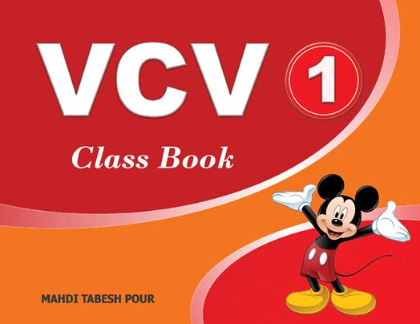

VCV ® and English Literacy:
One of the best things you can
ever do as a language educator is to teach a child how to read. It is even more
challenging when you teach English, with its own complicated system of spelling
and sounding, to Persian speakers.
In VCV, we provide all the necessary resources
to help our students grow from zero to hero literacy.
VCV ® is a straightforward literacy program that
is effective and delivers noticeable results within a short space of time. We
love it when teachers say ‘OMG they are reading English, it really works!’